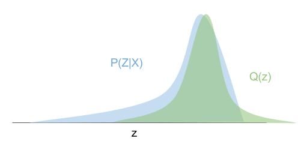

How PyDCML works
Contents
How PyDCML works¶
Variational inference basics¶
Exact Bayesian inference of Discrete Choice models is intractable. PyDCML uses Stochastic Variational Inference (SVI) in order to approximate the posterior distrubiton of the model parameters. Let \(\textbf{z}\) and \(\textbf{y}\) denote the model parameters (latent variables) and the oberved choices, respectively. In VI, we construct an approximation to the true posterior distribution \(p(\textbf{z}|\textbf{y})\) by considering a family of tractable distributions \(q_{\boldsymbol\phi}(\textbf{z})\) parameterized by \(\boldsymbol\phi\). The inference problem is then reduced to an optimization problem, where the goal is find the parameters \(\boldsymbol\phi\) of the variational approximation \(q_{\boldsymbol\phi}(\textbf{z})\) that make it as close as possible to the true posterior.
{kind=link}
The closeness between two distributions - in this case the approximate posterior and the true posterior - can be measured by the Kullback-Leibler (KL) divergence, which is given by
Unfortunately, the KL divergence above cannot be minimized directly. However, we can find a function that we can minimize, which is equal to it up to an additive constant:
The \(\log p(\textbf{y})\) term does not depend on \(\boldsymbol\phi\) and thus can be ignored. Minimizing the KL divergence is then equivalent to maximizing the evidence lower bound (ELBO).
Check out the following paper for additional details: Rodrigues, F. Scaling Bayesian inference of mixed multinomial logit models to large datasets. In Transportation Research Part B: Methodological, 2022.
Anatomy of a PyDCML model¶
Models in PyDCML are defined as Python classes containing (at least) the following key methods:
initialize_variational_distribution_q()- initializes the parameters of the variational distribution \(q_{\boldsymbol\phi}(\textbf{z})\).
For example, one may wish to define the mean vector \(\boldsymbol\mu\) and covariance matrix \(\boldsymbol\Sigma\) (which we parameterize through its lower-Cholesky factorization) of a multivariate Gaussian distribution to approximate the posterior distribution over the fixed-effects parameters \(\boldsymbol\alpha\):
self.alpha_mu = nn.Parameter(torch.zeros(self.num_fixed_params))
self.alpha_cov_diag = nn.Parameter(torch.ones(self.num_fixed_params))
self.alpha_cov_offdiag = nn.Parameter(torch.zeros(int((self.num_fixed_params*(self.num_fixed_params-1))/2)))
Note that torch.nn.Parameter is a PyTorch class that defines a learnable parameter (i.e., with respect to which we can compute gradients and perform gradient-based optimization through the automatic differentiation capabilities of PyTorch).
compute_variational_approximation_q(alt_attr, context_attr, obs_choices, alt_avail, alt_ids)- computes the variational distribution \(q_{\boldsymbol\phi}(\textbf{z})\) given the current variational parameters \(\boldsymbol\phi\).
For example, we can use the variational parameters defined above to construct the multivariate Gaussian approximation \(q(\boldsymbol\alpha) = \mathcal{N}(\boldsymbol\mu,\boldsymbol\Sigma)\):
alpha_cov_tril = torch.zeros((self.num_fixed_params, self.num_fixed_params), device=self.device)
alpha_cov_tril[self.tril_indices_alpha[0], self.tril_indices_alpha[1]] = self.alpha_cov_offdiag
alpha_cov_tril += torch.diag_embed(self.softplus(self.alpha_cov_diag))
q_alpha = td.MultivariateNormal(self.alpha_mu, scale_tril=torch.tril(alpha_cov_tril))
elbo(alt_attr, context_attr, obs_choices, alt_avail, obs_mask, alt_ids, indices)- computes a stochastic approximation to the evidence lower bound (ELBO) used by variational inference to optimize the parameters of the variational approximation \(q_{\boldsymbol\phi}(\textbf{z}|\textbf{y})\). This function is where the model is defined. See the following sections for a detailed explaination of how it works.
Note that for practical implementation reasons that will becomes apparent later, it is more convinient to re-write the ELBO as follows:
where the first term is just the expected log-likelihood of the model, while second term is simply the KL-divergence between the variational distribution and the prior (which in many cases has a closed form analytical solution and, therefore, does not require a Monte Carlo approximation).
infer(num_epochs=10000, true_alpha=None, true_beta=None, true_beta_resp=None)- performs variational inference (optimization loop) and outputs the final results. The optimization makes use of PyTorch’s automatic differentiation capabalities. In summary, the optimization loop consists in using a subset of the data (called “mini-batch”) to approximate the ELBO, and then taking a step in the direction provided by the gradient of the ELBO with respect to the variational parameters.
Example: Mixed Logit model¶
The standard Mixed Logit model that PyDCML implements has the following generative process:
Draw fixed taste parameters \(\boldsymbol\alpha \sim \mathcal{N}(\boldsymbol\lambda_0, \boldsymbol\Xi_0)\)
Draw mean vector \(\boldsymbol\zeta \sim \mathcal{N}(\boldsymbol\mu_0, \boldsymbol\Sigma_0)\)
Draw scales vector \(\boldsymbol\theta \sim \mbox{half-Cauchy}(\boldsymbol\sigma_0)\)
Draw correlation matrix \(\boldsymbol\Psi \sim \mbox{LKJ}(\nu)\)
For each decision-maker \(n \in \{1,\dots,N\}\)
Draw random taste parameters \(\boldsymbol\beta_n \sim \mathcal{N}(\boldsymbol\zeta,\boldsymbol\Omega)\)
For each choice occasion \(t \in \{1,\dots,T_n\}\)
Draw observed choice \(y_{nt} \sim \mbox{MNL}(\boldsymbol\alpha, \boldsymbol\beta_n, \textbf{X}_{nt})\)
where \(\boldsymbol\Omega = \mbox{diag}(\boldsymbol\theta) \times \boldsymbol\Psi \times \mbox{diag}(\boldsymbol\theta)\).
According to this generative process, and letting \(\textbf{z} = \{\boldsymbol\alpha,\boldsymbol\zeta,\boldsymbol\tau,\boldsymbol\Psi,\boldsymbol\beta_{1:N}\}\) denote the set of all latent variables in the model, the joint distribution factorises as
where we introduced the vector notation \(\textbf{y}_n = (y_{n1},\dots,y_{nT})^T\).
The goal of Bayesian inference is then to compute the posterior distribution of \(\textbf{z}\) given a dataset of observed choices. For VI, we will consider the following fully-factorized variational distribution (i.e., mean-field approximation):
The ELBO is then given by
Making use of the factorizations of the joint distribution of the model and the variational distribution, we can expand the ELBO as a sum of simpler terms:
The goal of the elbo() function will be to compute the ELBO defined above (actually, it will compute a Monte Carlo approximation), which will then be used to perform stochastic gradient-based updates of the variational parameters \(\boldsymbol\phi\). See the next section for the implementation details.
SVI implementation in PyDCML¶
Under development.